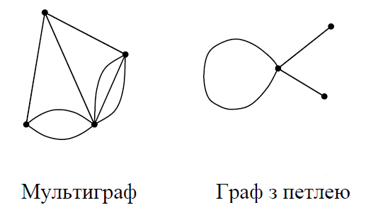

Лекція 4
Орієнтовані графи
Після цієї лекції ви зрозумієте:
- чим орієнтований граф відрізняється від звичайного;
- що означають вхідний і вихідний степені вершини;
- як подати орграф за допомогою матриць і списків.
Поняття орграфа
Орієнтований граф, або орграф, складається з вершин та дуг. На відміну від звичайного графа, кожне ребро тут має напрямок. Саме напрямок показує, з якої вершини дуга виходить і в яку входить.
Ключова ідея
Якщо дуга позначена як (x1, x2), то вона виходить з вершини x1 і входить у вершину x2. Для петлі початок і кінець збігаються.

Фрагмент презентації з прикладами мультиграфа та графа з петлею.
Степені вершин
- d+(x) - кількість дуг, що входять до вершини.
- d-(x) - кількість дуг, що виходять із вершини.
- Для орграфа важливо рахувати входи та виходи окремо, бо вони не обов'язково збігаються.
Подання графа
Презентація показує два основні способи подання орграфа: матрицю суміжності та матрицю інцидентності. Для насичених графів зручна матриця, а для розріджених - списки суміжності або список дуг.
Що варто запам'ятати
- У орграфі напрямок дуги має значення.
- Петля з'єднує вершину саму з собою.
- Матриця суміжності для орграфа може бути несиметричною.
- Зручність подання залежить від задачі, яку ми розв'язуємо.
Питання для самоперевірки
- Чим дуга відрізняється від звичайного ребра?
- Що означають d+(x) та d-(x)?
- Яке подання краще для розрідженого орграфа?